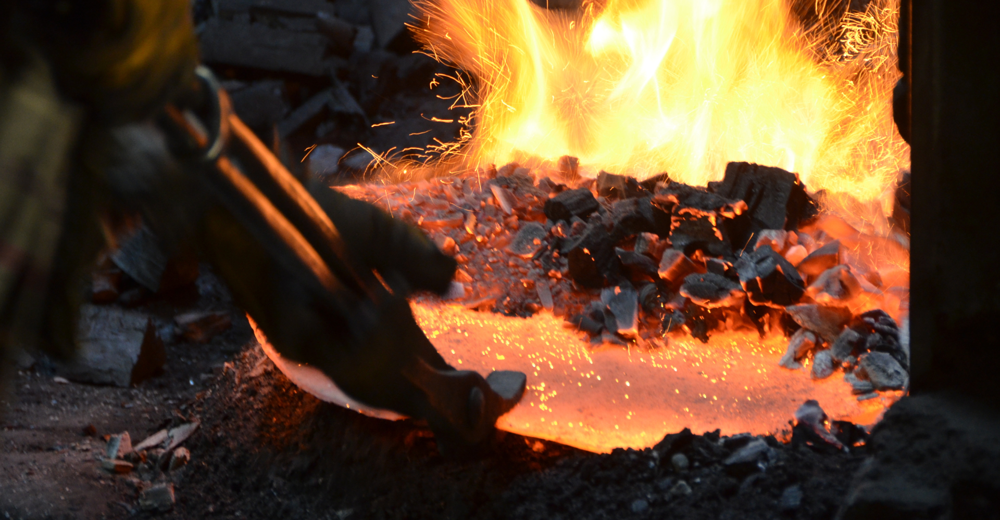
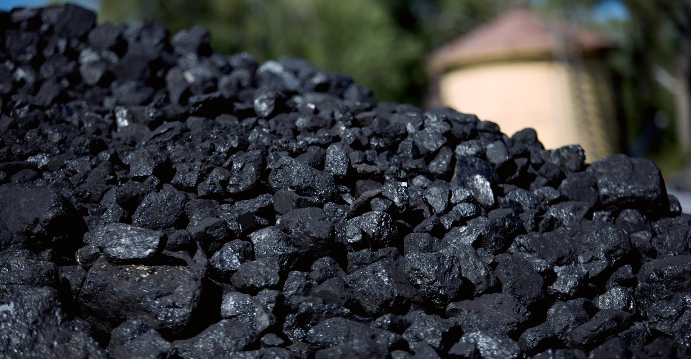

O carvão é um recurso natural formado pela decomposição de material vegetal em ambientes com pouca oxigenação ao longo de milhões de anos. Esse processo resulta em uma substância rica em carbono, que é utilizada principalmente na geração de eletricidade e no processo de fabricação de aço, onde é queimado em fornos para produzir calor. Existem diferentes tipos de carvão, como o antracito, betuminoso e lignito, que variam em termos de teor de carbono e poder calorífico. Apesar de ser uma das fontes de energia mais antigas e abundantes, o carvão está no centro de debates sobre sustentabilidade devido ao seu impacto ambiental.

A queima de carvão é uma das principais fontes de emissão de gases de efeito estufa, especialmente dióxido de carbono (CO2), contribuindo significativamente para o aquecimento global. Além disso, a queima de carvão também libera outros poluentes tóxicos, como óxidos de nitrogênio, dióxido de enxofre e material particulado, que têm efeitos prejudiciais à saúde humana e ao meio ambiente. A mineração de carvão também pode causar danos ambientais, incluindo a destruição de ecossistemas locais e a contaminação de fontes de água.
O carvão tem sido uma das principais fontes de energia para a geração de eletricidade em muitas partes do mundo. Ao ser queimado em usinas termelétricas, o carvão libera calor, que aquece a água e gera vapor, acionando turbinas que produzem eletricidade. Embora o carvão seja um combustível barato e disponível, sua queima é altamente poluente, o que tem levado vários países a buscar alternativas mais limpas e a investir em tecnologias para capturar e armazenar o carbono gerado.
Além de sua utilização na geração de energia, o carvão também é essencial para a produção de aço. No processo de siderurgia, o carvão é transformado em coque, que é usado para reduzir o minério de ferro e produzir ferro fundido, uma etapa crucial na fabricação de aço. Esse uso do carvão é particularmente importante para a infraestrutura e a indústria pesada, mas também contribui para as emissões de gases de efeito estufa.

O futuro do carvão é incerto devido às crescentes preocupações com as mudanças climáticas e a transição para fontes de energia mais limpas. Muitos países estão começando a reduzir o uso do carvão e a investir em energias renováveis, como solar, eólica e hidrelétrica. No entanto, em algumas regiões, o carvão ainda desempenha um papel importante na matriz energética e na indústria, principalmente devido ao seu custo acessível e à disponibilidade em grandes quantidades. A inovação em tecnologias de captura de carbono e o aumento de políticas ambientais rigorosas podem ajudar a reduzir o impacto ambiental do carvão no futuro.